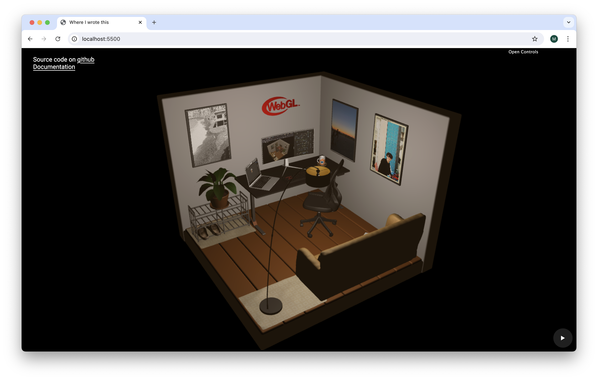

Il nome del progetto è
where-i-wrote-this ed è una
rappresentazione 3D della stanza dove è stato scritto questo codice. La
riproduzione dei dettagli e dei materiali non è del tutto fedele alla
realtà ma è stata realizzata con l'intento di essere il più possibile
simile alla stanza reale.
Il progetto è stato realizzato per il corso di
Computer Graphics nell'a.a 2023/2024 . Viene utilizzata come base una stanza isometrica e al suo interno
sono posizionati i vari oggetti. Tutti gli oggetti della scena sono
stati modellati utilizzando
Blender (v4.1.1), esportati in
formato .obj e
caricati sulla scena utilizzando le librerie fornite dal docente.
Per la realizzazione è stato utilizzata la libreria grafica
WebGL (che utilizza l'elemento
Canvas di HTML5) e codice JavaScript.

Screenshot of where-i-wrote-this
Struttura del progetto
Il progetto è strutturato come segue:
audio/: directory che contiene il codice per caricare un file mp3 e
gestisce un player audio
data/: directory che contiene i file .obj dei vari oggetti
doc/: directory che contiene la documentazione del progetto
libs/: directory che contiene le librerie utilizzate
shaders/: directory che contiene i file shader
utils/: directory che contiene funzioni utilizzate da più parti
index.html: file HTML principale.
index.js: file JavaScript principale.
style.css: file CSS principale.
Viene consegnato come file .zip strutturato come segue:
doc/: directory che contiene la documentazione
project/: directory che contiene il progetto
Librerie utilizzate
Sono state utilizzate diverse librerie per facilitare lo sviluppo e
diminuire la quantità di codice.
dat.gui.js: libreria
per la creazione di interfacce utente per modificare variabili in
JavaScript.
jquery-3.6.0.js: libreria per la
manipolazione del DOM e per facilitare la gestione degli eventi.
m4.js: libreria per la gestione delle matrici e dei vettori.
webgl-utils.js: libreria per la gestione delle funzioni utili in WebGL utilizzate
da più parti.